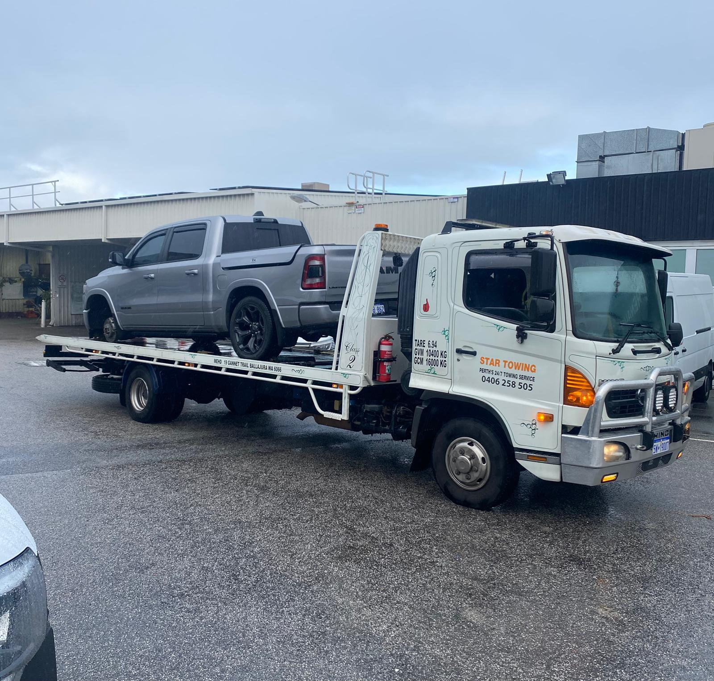

Scrap Car Removal
Remove unwanted, unused, damaged or end-of-life cars without needing to take them to a yard yourself.
Read service ↗Scrap Car Perth describes itself as an auto-wrecking and recycling business serving Perth for many years. Its core services cover removal, cash offers, recycling and auto wrecking.
Remove unwanted, unused, damaged or end-of-life cars without needing to take them to a yard yourself.
Read service ↗Receive a quote based on the vehicle's condition and other relevant details.
Read service ↗Usable parts can be separated from scrap materials so the vehicle is processed responsibly.
Read service ↗Vehicles can be accepted across a wide range of makes, models, ages and conditions.
Read service ↗Tell us about the vehicle, receive a quote, confirm the sale and arrange collection. The original business also describes paperwork and payment as part of the process.
View the process ↗
The business states that some donated cars are provided to the Western Australia Fire Department for training and practising road-crash rescue techniques. Ask about vehicle or usable-part donation options.
See donation options ↗Yes. The current Scrap Car Perth site says it buys vehicles in a wide range of conditions, including damaged, wrecked, unwanted, unused and working vehicles.
The business describes free car removal across Perth and surrounding suburbs once the purchase has been agreed.
Yes. The business says unwanted vehicles can be donated and that some donated cars are provided to the Western Australia Fire Department for rescue training.